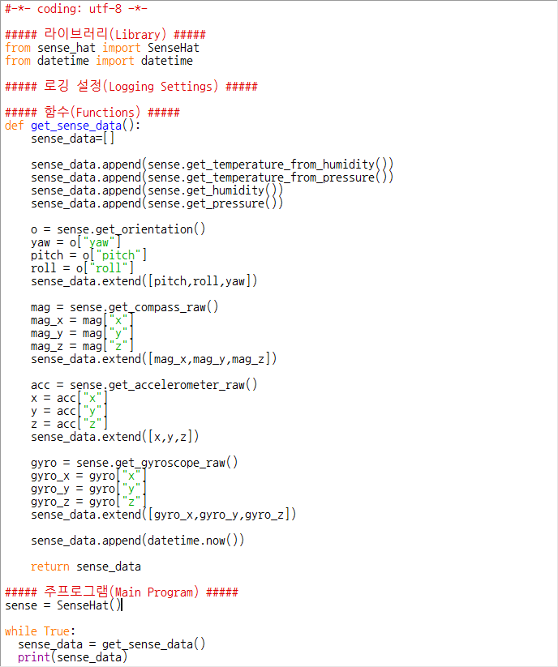

xwMOOC 라즈베리 파이
감각모자 데이터 로거(Logger)
학습 목표
- 센서 다수에서 데이터를 수집하여 리스트 자료구조로 생성하는 방법을 학습한다.
- 파이선 프로그램 내부에서 데이터를 텍스트 파일에 덧붙여 저장하는 방법을 배운다.
- 감각모자 조이스틱에서 입력을 받아 대응하는 법을 학습한다.
- 쓰레드를 사용해서 프로그램 여러 부분을 한번에 실행시킨다.
감각모자 하드웨어를 사용해서 주변 환경에 관한 다양한 정보를 수집하는 데이터 로거 장치를 만든다.
데이터 로거 장치를 만들게 되면 다양한 실험을 수행해서 데이터를 수집하게 된다. 가능한 실험에 다음이 포함된다.
- 4층 높이 옥상에서 데이터 로거 장치 낙하 실험
- 데이터 로거 장치를 냉장고에 넣고 온도 변화 관찰
- 헬륨 풍선으로 대기권 언저리로 데이터 로거 장치 날려보내기
원문 출처 및 저작 라이선스
이 번역의 원작 “SENSE HAT DATA LOGGER”은 라즈베리파이 재단에서 개발하여 공개하고 있다. 이 책은 크리에이티브 커먼스(Creative Commons)의 저작자표시(BY, Attribution), 동일조건변경허락(SA, Share-Alike) 라이선스(https://creativecommons.org/licenses/by-sa/2.0/kr/](https://creativecommons.org/licenses/by-sa/2.0/kr/) 를 준용합니다.
1. 필요한 하드웨어와 소프트웨어

- 하드웨어
- SD카드가 장착된 라즈베리 파이
- 라즈베리파이 기본 주변장치(USB 마우스, 키보드, 전원장치 등)
- 감각모자(Sense HAT)
- 소프트웨어
- 라즈비언 최신버젼 :
sudo apt-get dist-upgrade - 파이썬3 Sense-HAT
- 파이썬3 Pillow
- 파이썬3 Evdev
- 라즈비언 최신버젼 :
sudo apt-get install sense-hat
sudo pip-3.2 install pillow
sudo pip-3.2 install evdev2. 감각모자에서 데이터 가져오기
- 매우 간략한 파이썬 스크립트를 작성해서 감각모자에서 데이터를 가져와서 화면에 출력한다. 센서를 사용해서 다음 데이터를 캡쳐해서 저장한다.
- 온도
- 습도
- 압력
- 움직임
파이썬 스크립트를 작성하려면 라즈베리파이를 GUI 데스크톱 모드로 부팅하고 나서, 파이썬3 IDLE 을 실행시킨다.
IDLE이 실행되면 파이썬 쉘 윈도우가 뜨고, File > New File 을 선택하면 별도 창이 떠서 파이썬 코드를 작성할 수 있게 된다.

상기 이미지 우측편 윈도우에 파이썬 코드를 작성하고, 왼쪽 윈도우에 파이썬 코드 실행결과가 출력된다. 감각모자 센서에서 데이터를 수집하는 프로그램을 작성해보자.
- 오른쪽 윈도우 창에 다음 파이썬 코드를 추가한다.
#기호로 시작하는 줄은 주석(comments) 으로 컴퓨터는 무시하지만, 사람에게는 유용하다. 주석을 사용해서 코드를 4개 부분으로 쪼갠다. 이렇게 하면 프로그램이 복잡해져도 프로그램을 더 쉽게 개발하게 된다.

- 첫번째 부분, LIbraries 라이브러리는 프로그램에 부가적인 기능을 부여하는 코드를 가져오는 영역이다.
from sense_hat import SenseHat명령어는 감각모자 하드웨어를 사용하는 기능을 부여한다.from datetime import datetime명령어는 시간 모듈을 사용하는 기능을 부여한다. - 두번째 부분, Logging Settings 로깅 설정 부분은 로거 프로그램의 다양한 기능을 제어하는 영역이다.
- 세번째 부분, Function 함수 부분에 ‘현 데이터를 파일에 저장’ 같은 특정 작업을 수행하는 재사용가능한 코드 덩어리가 담겨진다.
- 마지막 부분, Main Program 주프로그램 부분은 전체 프로그램을 올바른 순열로 앞서 환경설정한 코드와 함수를 실행시키는 역할을 하게 된다.
- 감각모자에서 데이터를 받아오려면
get_sense_data함수를 호출한다.get_sense_data함수는 센서 각각을 순서대로 점검하고 센서데이터를 리스트로 저장한다. 작성한 함수를 Function 영역에 추가한다.
def get_sense_data():
sense_data=[]
sense_data.append(sense.get_temperature_from_humidity())
sense_data.append(sense.get_temperature_from_pressure())
sense_data.append(sense.get_humidity())
sense_data.append(sense.get_pressure())함수 첫번째 줄에 함수명이 정의되고, 두번째 줄에 빈 리스트 자료구조를 설정해서 수집되는 데이터가 추가되도록 만든다.
다음 네줄은 각 센서에서 데이터를 받아와서 sense_data 리스트에 센서데이터를 추가하거나 덧붙이는 역할을 수행한다.
먼저 방향(orientation)관련 센서는 값 3개를 되돌려 주어야 되서 다소 복잡하다. 방향값(요, 피치, 롤)을 감각모자에 요청하고, 전달받은 세가지 값을 sense_data 리스트에 쭉 집어넣는다.
o = sense.get_orientation()
yaw = o["yaw"]
pitch = o["pitch"]
roll = o["roll"]
sense_data.extend([pitch,roll,yaw])
mag = sense.get_compass_raw()
mag_x = mag["x"]
mag_y = mag["y"]
mag_z = mag["z"]
sense_data.extend([mag_x,mag_y,mag_z])
acc = sense.get_accelerometer_raw()
x = acc["x"]
y = acc["y"]
z = acc["z"]
sense_data.extend([x,y,z])
gyro = sense.get_gyroscope_raw()
gyro_x = gyro["x"]
gyro_y = gyro["y"]
gyro_z = gyro["z"]
sense_data.extend([gyro_x,gyro_y,gyro_z])
sense_data.append(datetime.now())
return sense_data함수 나머지 부분에 센서가 3개(지자계, 가속도, 자이로스코프) 더 추가되고 나서 현재시간을 추가한다. 함수 마지막에 return 문이 있어, 센서데이터를 요청한 주프로그램에 sense_data 리스트를 반환한다.
- Main Program 주프로그램에 코드를 몇줄 추가해야 되는데, 다음 두가지 역할을 수행하게 된다:
sense객체를 생성.sense객체는Sense HAT을 대표함.- 반복적으로 센서에서
get_sense_data함수로 센서데이터를 가져오고, 이를 화면에 출력.
Main Program 주프로그램에 다음 코드를 추가한다.
sense = SenseHat()
while True:
sense_data = get_sense_data()
print(sense_data)
- 이제 로거를 테스트한다. 먼저 작성한 파이썬 프로그램을 저장한다: Ctrl+S 키를 누르고 나서,
Sense_Logger_v1.py처럼 파일명을 저장한다. 프로그램을 저장하고 나서, F5 키를 눌러 실행한다. 다음과 같이 센서 정보가 스크롤 되면서 빨리 넘어가는 것이 보이면 정상이다.

상기 이미지에서 강조표시된 영역이 센서에서 수집된 데이터가 한데 묶여 리스트 한줄로 표시된 것이다. 리스트에 나온 데이터 중 어떤 부분이 어느 센서에서 나온 것인지 분간할 수 있어야 한다.
잘 돌고 있는 프로그램을 멈추는데 Ctrl+C 키를 눌러 실행을 취소한다.